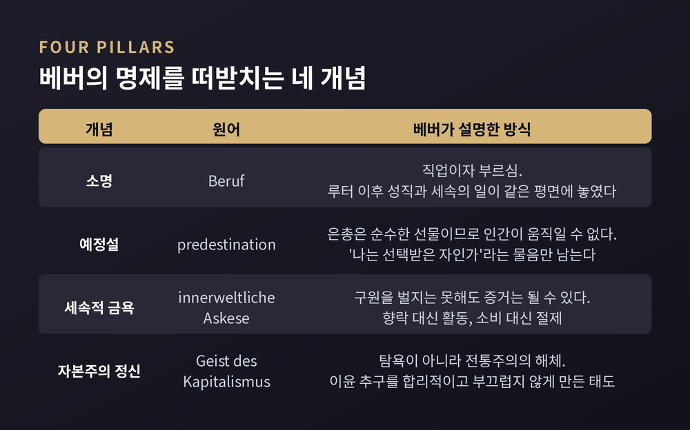
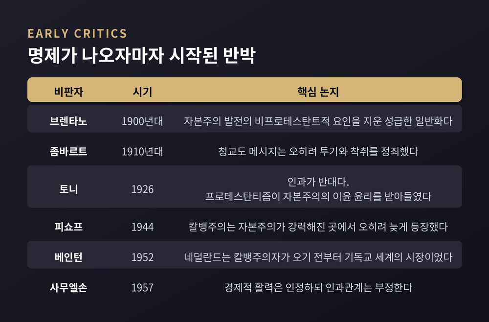
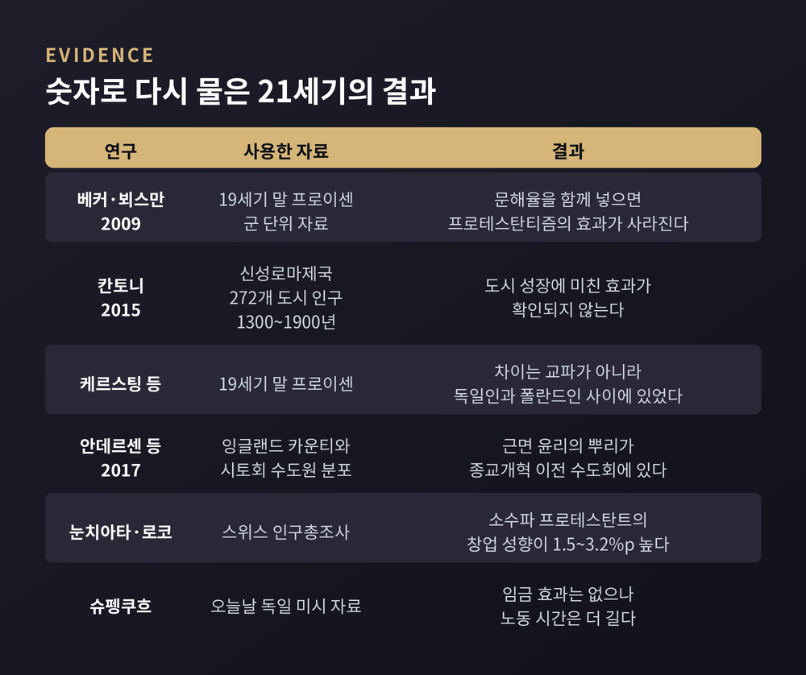

소명과 예정설에서 문해율 가설까지, 종교가 경제 행동을 바꾼다는 주장의 실증 성적표
이번 글에서는 막스 베버의 프로테스탄트 윤리 명제를 정리해 보겠습니다. 종교가 경제 행동을 바꾼다는 이 주장이 120년 동안 어떤 검증과 반박을 거쳤는지 함께 따라가 보려 합니다. 어느 신앙이 옳고 그른지를 가리는 글이 아니라, 하나의 학술 가설이 어떻게 시험대에 올랐는지를 살피는 글입니다.
세 줄 요약
막스 베버(1864~1920)는 1904년과 1905년에 두 편의 논문으로 이 명제를 내놓았습니다. 영어권에는 1930년 탤컷 파슨스의 번역으로 『프로테스탄트 윤리와 자본주의 정신』이라는 단행본이 되어 알려졌습니다.
출발점은 뜻밖에도 통계였습니다. 베버는 제자 마르틴 오펜바허가 1901년에 낸 바덴 지역 연구를 인용했습니다. 종교 소속과 사회 계층, 진학하는 학교의 종류가 어떻게 갈리는지를 다룬 자료였습니다.
그가 관찰한 것은 이런 장면입니다. 바덴과 바이에른, 헝가리에서 가톨릭 부모와 프로테스탄트 부모가 자녀에게 시키는 고등교육의 성격이 달랐다는 것. 그리고 근대적 기업의 경영자와 자본 소유자, 기술·상업 담당 고급 인력이 프로테스탄트 쪽에 몰려 있었다는 것.
여기서 질문이 나옵니다. 이 차이는 우연인가, 아니면 신앙이 사람의 경제 행동을 바꾼 결과인가.
베버의 설명은 세 단계로 이어집니다.
첫째는 소명입니다. 독일어 'Beruf'는 직업과 부르심을 동시에 뜻합니다. 루터가 구원이 은총과 믿음으로 주어진다고 주장하면서, 모든 직업이 같은 평면 위에 놓였습니다. 성직이 세속의 일보다 위에 있다는 중세적 위계가 흔들린 것입니다. 다만 베버는 루터가 여기서 멈췄다고 봤습니다. 경제생활을 보는 그의 시선은 여전히 정태적이었기 때문입니다.
둘째는 예정설입니다. 칼뱅은 은총을 '선물'이라는 말의 끝까지 밀어붙였습니다. 선물이라면 주는 쪽이 온전히 자유로워야 합니다. 그렇다면 성사도, 선행도, 통회도 신의 결정을 움직일 수 없습니다. 움직일 수 있다면 은총은 거래의 한쪽이 되어버리니까요. 문제는 인간의 자리에서 이 절대적 자유가 헤아릴 수 없는 것으로 보였다는 점입니다. '나는 선택받은 자인가.' 베버는 이 물음이 평범한 신자에게 절박해졌다고 추론했습니다.
셋째가 세속적 금욕입니다. 신의 결정을 바꿀 수는 없지만 자기 상태를 확인하려는 시도는 가능했습니다. 신의 영광을 더하는 삶은 선택된 상태에서 자연히 흘러나온다고 여겨졌습니다. 그래서 올곧은 생활은 구원을 벌어들이는 수단이 아니라 구원의 증거로 되돌아옵니다. 여가와 향락이 아니라 활동만이 신의 영광을 더한다는 문장이 여기서 나옵니다. 소비와 나태는 낭비이니 억제되고, 벌되 쓰지 않으니 잉여가 남아 재투자로 흘러갑니다.

여기서 오해가 자주 생깁니다. 베버가 말한 자본주의 정신은 탐욕이 아닙니다.
그는 돈벌이를 소명으로 삼는 태도가 오랜 시대에 걸쳐 오히려 윤리 감정에 반하는 일이었다고 적었습니다. 프로테스탄티즘 이전 사회에서 사업은 전통적인 생활 방식, 전통적인 이윤율, 전통적인 노동량에 묶여 있었습니다.
베버가 놀랍게 본 대목은 따로 있습니다. 조직 형태의 본질적 변화 없이도 이 전통주의가 깨졌다는 점입니다. 그가 보기에 달라진 것은 기술이 아니라 정신이었습니다.
노동자 쪽도 함께 봤습니다. 초기 자본주의는 정직하고 시간을 지키는 노동을 필요로 했는데, 전통 사회에는 그런 노동 규율이 없었습니다. 자유로운 노동이 스스로 그 규율에 복종하려면 이전에 없던 내면의 가치체계가 필요하다는 것이 그의 판단이었습니다.
명제를 공정하게 다루려면 이 부분을 짚어야 합니다.
베버는 마르크스의 일면적 유물론을 똑같이 일면적인 유심론적 인과 해석으로 바꾸는 것이 자기 목표가 아니라고 명시했습니다. 그가 쓴 개념은 '선택적 친화력'(Wahlverwandtschaft)입니다. 기계적 인과가 아니라, 역사적으로 의미 있고 경험적으로 관찰 가능한 연관을 가리키는 말입니다. 사회를 단일 원인으로 설명하려는 태도를 원칙적으로 거부하는 개념이기도 합니다.
'이념형'이라는 도구도 함께 기억할 만합니다. 자본주의 정신이나 금욕적 프로테스탄티즘은 어느 한 교파의 실측치가 아니라 분석을 위해 만든 구성물입니다.
다만 긴장은 남습니다. 경제사 백과인 EH.Net의 정리에 따르면, 베버 자신의 부인에도 불구하고 그는 프로테스탄트 윤리가 없었다면 전통적 자본주의가 근대 자본주의로 바뀌지 않았을 것처럼 서술했습니다. 이 지점은 지금도 정리되지 않은 논쟁입니다.
비판은 곧바로 나왔습니다.
루요 브렌타노와 베르너 좀바르트는 베버가 자본주의 발전의 비프로테스탄트적 요인을 지워버린 채 성급하게 일반화했다고 봤습니다. 청교도의 메시지는 오히려 반물신주의적이어서 투기와 착취를 정죄하고 부를 위험한 것으로 다루었다는 지적입니다. 다만 베버는 반비판에서, 자신의 관심은 윤리 교설의 직접적 영향이 아니라 종교적 믿음에서 유래한 심리적 제재에 있다고 응수했습니다.
가장 유명한 반박은 R. H. 토니의 1926년 저작 『종교와 자본주의의 발흥』입니다. 그는 인과의 방향을 뒤집었습니다. 프로테스탄티즘이 자본주의의 이윤 추구 윤리를 만들어낸 것이 아니라 받아들인 것이라는 주장입니다. 토니는 베버가 다면적인 개혁교회 기독교를 후기 영국 청교주의와 사실상 같은 것으로 다루었다고도 지적했습니다. 베버의 결정적 인용문 대부분이 그 시기에서 나왔다는 것입니다. 칼뱅의 제네바가 보인 엄격한 집단주의는 칼뱅주의가 자본주의와 조화를 이루기 한참 전에 형성된 것이기도 했습니다.
시기 검증도 이어졌습니다. 에프라임 피쇼프는 1944년 정리에서, 칼뱅주의가 결정적으로 강력해진 곳에서는 오히려 자본주의보다 늦게 등장했다고 결론지었습니다. 롤런드 베인턴은 네덜란드가 칼뱅주의자가 들어오기 훨씬 전부터 기독교 세계의 시장이었다는 점을 들었습니다. 쿠르트 사무엘손은 1957년 저작에서 프로테스탄트 국가들의 경제적 활력 자체는 인정하면서도 인과관계는 부정했습니다.

논쟁은 20세기 후반부터 계량경제사의 영역으로 넘어갑니다.
가장 널리 인용되는 연구는 자샤 베커와 루트거 뵈스만의 2009년 『계간 경제학지』 논문 「베버는 틀렸는가」입니다. 두 사람은 19세기 말 프로이센의 군 단위 자료를 썼습니다. 종교개혁이 비텐베르크를 중심으로 동심원처럼 퍼졌다는 점을 이용해, 비텐베르크까지의 거리를 프로테스탄티즘의 도구변수로 삼았습니다.
결과가 흥미롭습니다. 프로테스탄티즘은 더 높은 번영과도, 더 높은 교육 수준과도 연관되어 있었습니다. 그런데 프로테스탄티즘과 문해율을 함께 넣어 번영을 설명하자 프로테스탄티즘 쪽 연관이 사라졌습니다. 효과 전체가 문해율에 흡수된 것입니다. 성서를 직접 읽히려는 교육이 인적자본을 만들었고, 번영은 거기서 왔다는 해석입니다.
다비데 칸토니의 2015년 논문은 더 직접적입니다. 신성로마제국 272개 도시의 1300년부터 1900년까지 인구 자료를 써서 도시 성장을 봤더니, 프로테스탄티즘이 성장에 미친 효과가 없었습니다. 저자는 이 결과가 정밀하게 추정되었고 통제변수를 바꿔도 견고하다고 밝혔습니다.
케르스팅과 볼프 등의 연구는 또 다른 변수를 꺼냈습니다. 19세기 말 프로이센에서 소득과 저축, 문해율의 차이는 프로테스탄트와 가톨릭 사이가 아니라 독일인과 폴란드인 사이에서 나타났다는 것입니다. 이들은 반폴란드 차별을 원인으로 지목했습니다.
윤리의 기원 자체를 옮겨놓은 연구도 있습니다. 안데르센과 벤첸 등이 2017년 『이코노믹 저널』에 낸 논문은 근면과 절약의 문화가 종교개혁 이전에 뿌리를 둔다고 봤습니다. 가톨릭 수도회인 시토회입니다. 시토회 수도원에 더 노출된 잉글랜드 카운티들이 13세기부터 더 빠른 생산성 증가를 보였고, 그 효과는 1530년대 수도원이 해산된 뒤에도 남았습니다.

한쪽으로만 정리하면 정확하지 않습니다. 부분적인 지지 근거도 존재합니다.
루카 눈치아타와 로렌초 로코는 스위스 인구총조사를 써서 소수파 프로테스탄트와 소수파 가톨릭을 비교했습니다. 다수파라는 지위가 주는 이점을 걷어낸 설계입니다. 결과는 소수파 프로테스탄트의 창업 성향이 1.5에서 3.2퍼센트포인트 높다는 것이었습니다. 소수 집단의 규모가 작을수록, 그리고 고숙련 직종일수록 그 차이가 컸습니다.
요르크 슈펭쿠흐는 오늘날의 독일을 봤습니다. 16세기 평화조약이 가톨릭과 프로테스탄트의 지리적 분포를 결정했다는 점을 이용한 연구입니다. 시간당 임금에는 효과가 없었습니다. 다만 프로테스탄트가 더 긴 시간 일한다는 결과는 남았습니다.
예전에는 '프로테스탄티즘이 자본주의를 낳았는가'를 물었습니다. 지금은 '종교가 어떤 경로로 경제 행동에 닿는가'를 묻습니다. 질문이 좁아진 만큼 답은 정밀해졌습니다.
베버는 서구만 본 것이 아닙니다. 그는 『중국의 종교: 유교와 도교』(1915)와 『인도의 종교』(1916)를 잇달아 썼습니다.
중국에 대해 그는 유교 윤리가 효와 사회적 조화, 학문적 성취를 강조했고 예언적 계시나 이윤 추구를 강조하지 않았다고 정리했습니다. 현세적 성공은 중시했지만 구원을 위해 사회를 변혁하라는 동기는 주지 않았다는 것입니다. 인도에 대해서는 카스트와 카르마 관념을 포함한 윤리적 지향이 합리적 경제 행위에 불리한 조건을 만들었다고 봤습니다.
이 비교연구에 대한 비판은 여러 층으로 쌓여 있습니다.
방법론 쪽에서는 유교를 중국 사회의 전면적 지배력으로 본 것이 타당한지, 도교와 불교의 영향을 더 진지하게 다뤘어야 하지 않는지를 묻습니다. 종교보다 정치와 제도 요인이 최소한 같은 정도로 중요하지 않았느냐는 반문도 있습니다. 개념 이해 쪽에서는 천인합일 관념의 오독이나 삼교합일에 대한 간과가 지적됩니다. 자료의 한계도 분명합니다. 베버는 식민지 시기의 인도 조사 자료와 옛 중국학 문헌에 의존했습니다. 이 점은 베버 자신도 인정했습니다.
가장 흥미로운 반례는 시간이 만들어냈습니다. 20세기 후반 동아시아의 고도성장 이후, 유교 윤리가 오히려 성장에 기여했다는 '탈유교 가설'이 등장했습니다. 근면과 절약, 확대가족에 대한 충성 같은 가치가 서구식보다 덜 대립적인 발전 모델을 제공한다는 주장입니다. 물론 이 가설도 논쟁적입니다. 사후 합리화라는 비판, 제도와 정책과 국제질서 같은 비문화적 요인을 과소평가한다는 반론이 함께 붙어 있습니다.
같은 종교 전통이 시기에 따라 정반대 평가를 받았다는 사실 — 이것이 이 논쟁이 남긴 가장 값진 교훈일지도 모릅니다.
지금 학계의 태도는 대체로 이렇게 정리됩니다.
먼저 통속화된 '베버 명제'와 실제 베버를 구분합니다. 프로테스탄트가 부자가 된다는 식의 요약과, 베버가 제시한 선택적 친화력은 다른 것이라는 인식이 표준에 가깝습니다.
다음으로, 검증 가능한 인과 주장으로 좁히면 지지 근거는 대체로 약합니다. 도시 성장이든 지역 번영이든, 계량적으로 다루면 프로테스탄티즘의 독립 효과는 사라지거나 문해율과 민족 같은 다른 변수로 흡수되는 경향이 있습니다.
그렇다고 이 명제가 무의미해진 것은 아닙니다. 문화적 가치가 경제에 영향을 준다는 더 일반적인 주장은 살아남았습니다. 성취 동기가 경제 성장률과 관련 깊다는 연구, 법 집행의 실효성과 계약의 신뢰성과 재산권의 안전을 담은 지표가 성장과 연관된다는 연구가 그렇습니다. 다만 이때 측정되는 것은 종교적 가치가 아니라 세속적 가치입니다.
연구의 초점도 옮겨갔습니다. 어느 종교가 우월한가가 아니라, 종교가 교육과 인적자본, 소수자 지위, 신뢰와 계약, 노동 시간, 민족적 배제 가운데 어떤 경로로 경제에 닿는가를 분해하는 쪽입니다.
정리하면 이렇습니다.
베버의 명제는 '틀린 가설'로 폐기되지도, '입증된 법칙'으로 승격되지도 않았습니다. 대신 더 나은 질문으로 분해되었습니다. 문해율이라는 답, 시토회라는 답, 민족적 배제라는 답, 소수자 지위라는 답이 그 자리에서 나왔습니다. 어느 쪽도 특정 신앙의 우월함을 말하지 않습니다.
좋은 가설은 정답이어서가 아니라, 120년 동안 사람들을 계속 묻게 만들어서 좋은 것이라고 생각합니다.
베버가 옳았느냐고 물으신다면, 그가 옳았는지보다 그가 물을 만한 것을 물었는지가 더 중요하다고 답하겠습니다.